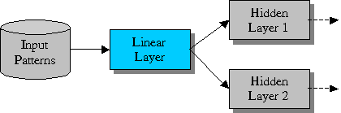
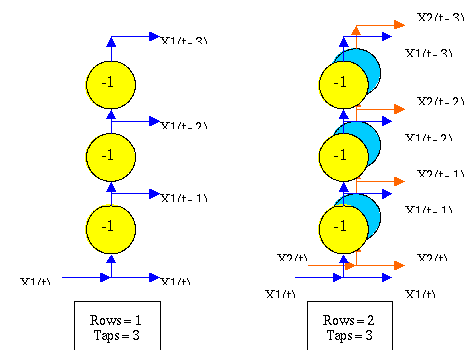
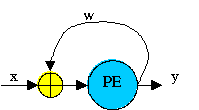
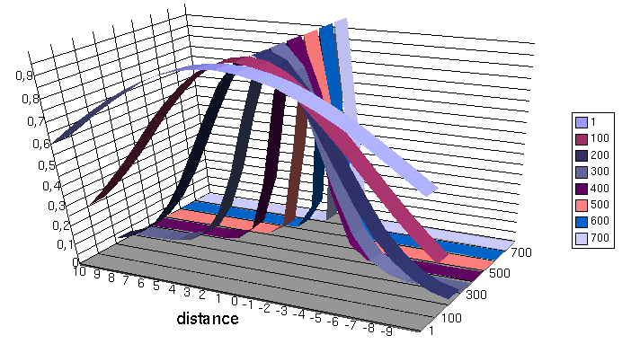
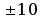

The Processing Elements
Now we’ll see the principal kind of layers and synapses implemented
into the core engine, and for everyone we’ll show the transfer function
and the most common usage.
The Layers
The Layer object is the basic element that forms the neural net.
It is composed of neurons, all having the same
characteristics. This component transfers the input pattern to the
output pattern by executing a transfer function. The output pattern is
sent to a vector of Synapse objects attached to the layer's output. It
is the active element of a neural net in Joone, in fact it runs in a
separated thread (it implements the java.lang.Runnable
interface)
so that it can run independently from other layers in the neural net.
The Linear Layer
The Linear Layer is the simplest kind of layer, as it simply transfers
the input pattern to the output applying a linear transformation, i.e.
multiplying it by a constant term, the Beta term. If it is equal to 1
(one), then the input pattern is transferred without modifications.
The Linear Layer is commonly used as a buffer, placed, for instance, as
the first layer of a neural network to permit to send an unmodified
copy
of the input patterns to several hidden layers, as depicted in the
following figure:

Without a Linear Layer, in these cases it would be impossible to send
the same input pattern to many subsequent layers, because the input
component (the InputSynapse here represented by a cylinder) can be
attached only to one layer.
The Sigmoid Layer
The Sigmoid Layer applies a sigmoid transfer function to its input
patterns, representing a good non-linear element to build the hidden
layers of the neural network.
The sigmoid layer can be used to build whatever layer of a neural
network.
Its output is smoothly limited within the range 0 and 1.
The Tanh Layer
The Tanh Layer is similar to the sigmoid layer except that the applied
function is a hyperbolic tangent function, that limits its output
within
the range –1 and 1.
The Logarithmic Layer
This layer applies a logarithmic transfer function
to its input patterns, resulting in an output that, unlike from the
above two previous layers, ranges from 0 to infinite. This behaviour
permits to avoid the saturation of the processing elements of a layer
in
presence of a lot of input synapses connected, or in presence of input
values very near to the limits 0 and 1, where the sigmoid and tanh
layers have a response curve very flat.
The Delay Layer
The delay layer applies the sum of the input values to a delay line, so
that the output of each neuron is delayed a number of iterations
specified by the taps parameter.
To understand the meaning of the taps parameter, look at the following
picture that contains two different delay layers, one with 1 rows and 3
taps, and another with 2 rows and 3 taps:

the delay layer has:
- the number of inputs equal to the rows parameter
- the number of outputs equal to the rows * (taps + 1)
The taps parameter indicates the number of output delayed cycles for
each row of neurons, plus one because the delayed layer also presents
the actual input sum signal Xn(t) to the output. During a training
phase, error values are fed backwards through the delay layer as
required.
This layer is very useful to train a neural network to predict a
time-series, giving it a ‘temporal window’ of the input raw data.
The Sine Layer
The output
of a Sine Layer neuron is the sum of the weighted input values,
applied to a sine – sin(x) – transfer function. Neurons with sine
activation function might be useful in problems with periodicity.
The Context Layer
The context layer is similar to the linear layer except that it has an
auto-recurrent connection between its output and input, like depicted
in
the following figure:

The recurrent weight w is named
‘timeConstant’ because it back-propagates the past output signals and,
as its value is less than one, the contribute of the past signals
decays
slowly toward zero at each cycle. Its value is constant, hence doesn’t
change during the training phase.
In this manner the context layer has a own ‘memory’ embedded mechanism.
This layer is used in recurrent neural networks like the Jordan-Elman
ones.
The WinnerTakeAll Layer
The WinnerTakeAll layer is one of the components – along with the
GaussianLayer and the KohonenSynapse – useful to build unsupervised
self-organized-map (SOM) networks.
This kind of networks learns without an external teacher, simply
detecting the similarities of the input patterns and categorizing (i.e.
projecting) them on a (1D or 2D) map.
This layer implements the Winner Takes All SOM strategy. The layer
expects to receive Euclidean distances between the previous synapse
(the
KohonenSynapse) weights and it's input. The layer simply works out
which node is the winner and passes 1.0 for that node and 0.0 for the
others.
In this manner the attached KohonenSynapse can adjust its own weights
according to the winner neuron, updating the internal connections so
that, when a similar input is presented, the same neuron will be
activated (or one near it, depending on how much that pattern is
similar
to that seen during the learning phase).
The Gaussian Layer
The Gaussian layer performs a similar work like the WTA layer, but in
this case it activates the output neurons according a gaussian shape
centered around the most active neuron (the winner).
This layer implements the Gaussian Neighborhood SOM strategy. It
receives the Euclidean distances between the input vector and weights
and calculates the distance fall off between the winning node and all
other nodes. These are passed back allowing the previous synapse (the
KohonenSynapse) to adjust it's weights.
The distance fall off is calculated according to a Gaussian
distribution from the winning node.
In this manner the in the KohonenSynapse not only the weights feeding
the winner neuron will be adjusted, but also its neighbor, with a
strength inversely proportional to the distance from the winner neuron.
The transfer function can be represented by a graphic diagram of the
output values in correspondence of both the distance from the winner
node and the actual epoch.
The neighborhood around the
winner node starts very large and then is reduced following a gaussian
curve, as depicted in the following image:

the curves represent how the neighborhood function changes during the
training epochs; the X axis represents the distance from the winner
node
(in this example), the
Y axis contains the output values of the layer, and the numbers in the
legend (Z axis) represent the number of epochs (from 1 to 700 in this
example).
As you can see, an initial phase exists, within which the algorithm
maintains large the neighborhood size to permit a large number of
weights to participate to the adjustments (this phase is named ordering
phase), after which the neighborhood is maintained very small (the
weights are frozen after they have chosen the input vectors to which to
respond).
A similar mechanism is implemented into the KohonenSynapse
object.